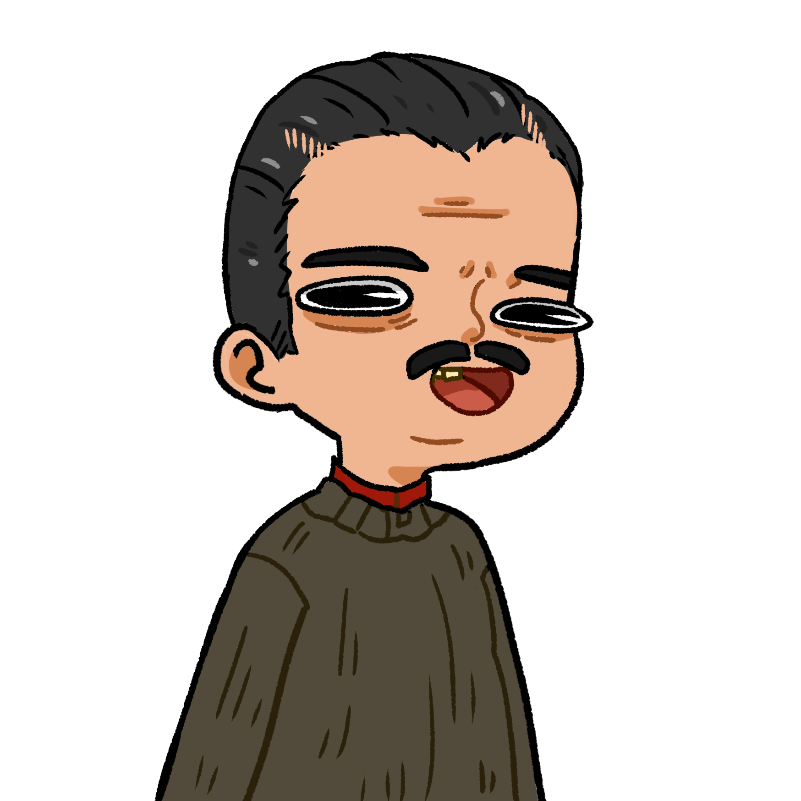
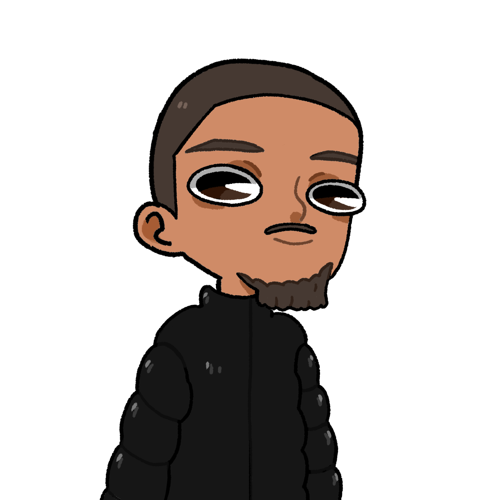
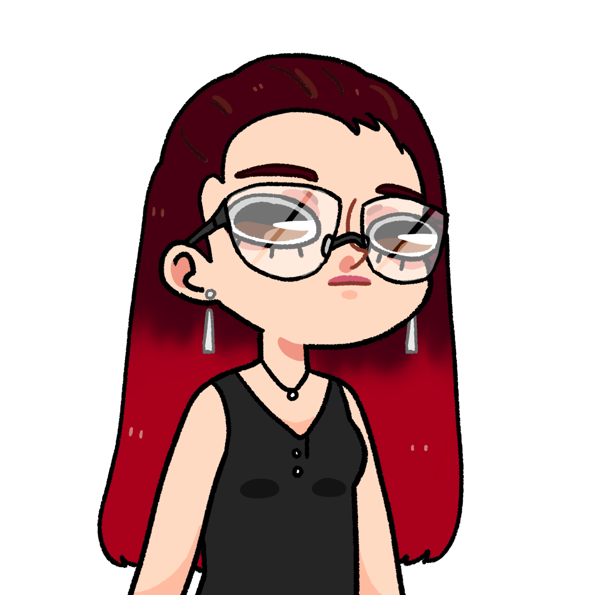

Toujours à bords du paquebot royale, Samy se réveilla en pleine nuit avec une forte avis de vomir. Il s’était endormis dans la cabine du capitaine, mais le mouvement, plutôt fort, des vagues avait fini par avoir le déçu sur son sommeil, en plus de lui avoir donné la nausée. Il chercha Ivan des yeux, et le vit entrain de ronfler dans un coin. Soudain, il compris. Il se leva, et donna une grande claque à Ivan.
 Hmm oui Léopold continus…
Hmm oui Léopold continus…
 Réveille toi abrutis !
Réveille toi abrutis !
Hmm hein ? Ah Samy c’est toi. J’ai fait un rêve où…
On s’en branle putain t’étais censé conduire le bateau ! On par à la dérive là !
Oh merde le bateau ! J’avais oublié !
J’ai vu ça !
On est où du coup ?
Proche d’une plage. C’est tout ce que je sais.
Et il est quelle heure ?
À peu près 11h.
Bon. Laisse moi faire, je suis un pro de la conduite ! Je vais nous faire accoster en deux temps trois mouvements !
Malheureusement, à cause d’une vague particulièrement mal placée, Ivan fit un tonneau et leur embarcation s’écrasa violemment sur la plage, tuant des centaines de touristes.
Et voilà ! On s’en est pas trop mal sortit.
Tu fais exprès de ne pas entendre les cris d’agonie des gens autour de nous ?
J’entends surtout le fou rire du barman d’en face.
 ¡ Los chicos vienen en bote y aplastan a los turistas !
Excusez moi monsieur, on…
¡ Nunca había visto a alguien conducir tan mal !
Oui oui c’est très bien, mais on aurait besoin d’un véhicule. Vous pourriez nous aider ?
 Laissez moi faire les gars, le colonel a la situation en main !
¡ Issou !
Hallo drekiger privilegierter weißer Mann, gib uns dein dort geparktes Auto !
Je suis pas sur que ça soit vraim…
¡ Claro ! Sígame.
Ok, je vais me faire foutre.
Ils firent le tour du bâtiment qu’ils avaient pris pour un bar, alors qu’il s’agissait d’un restaurant à paellas low-cost, et trouvèrent un superbe Hammer rouge flambant neuf. Ils montèrent à l’intérieur, et Juan pris le volant.
On voudrais aller en France, vers Paris si possible.
¿ En Francia ? En coche Simone, ¡ soy yo quien conduce ! Es agradable tener niños pequeños con quienes hablar…
Putain je sens qu’il va être long ce voyage…
Après plusieurs heures de voyage, nos protagonistes atteignirent enfin la frontière et sa douane.
… Y me llama el cocinero « ¡ Risitas ! » « ¿ Qué ? » « Ve por la paellera, ¡ venga ! Que a las dos de la tarde ¡ ya están aquí ! ». Mira en bañador, con las chanclas, todo despeinado porque no me dio tiempo… na ponerme las chanclas… ¡ y el bañador ! ¡ VOY A LA PLAYA Y HABÍA SUBIDO LA MAREA ! ¡ Issou ! Espera, están los funcionarios de aduanas.
Vos papiers monsieur.
C’est marrant elle me dit quelque chose cette voix...
¡ Los dejé en el restaurante !
C’est regrettable. Sortez du véhicule nous allons vous attacher et attendre l’arriver de la police pour vous renvoyer dans votre pays.
¡ No ! ¡ Por favor !
Eh mais… Salut Alan !
 Ça alors ! Vous ici !
Ça alors ! Vous ici !
On peut dire la même chose de toi… Je t’ai tué il me semble !
Ouais je m’en souvient bien. Sans rancune t’inquiète, mais juste pour savoir, vous allez où ?
On va niquer sa race à Matéo !
Encore ? Mais on m’a dit que Léopold l’avait Tué !
Ouais, mais le dit Léopold a fait de la merde, et maintenant il a disparu, et on suppose que Matéo l’a plus ou moins capturer et…
Mais comment Matéo l’a capturé s’il est mort ?
Bah enfaîte… Une minute. Toi aussi t’étais mort non ?
Oui.
Qui t’a dis qu’il était mort Matéo ?
 Moi
Maëlle !
Yo.
Bon, on va lui régler son compte à cet enfoiré ?
Ah ? T’es plus de son côté ?
Je l’ai jamais été ! Il m’a volé un Gameboy !
On dit pas « une » ?
Non, « un ».
Bon aller, je prend le volant ! En voiture Simone, c’est moi qui conduit !
Ta gueule Ivan !
Ta gueule Ivan !
Ta gueule Ivan !
Ouais grave !
Ignorant les appels à l’aide de M. Borja toujours attaché, ils partirent en direction du Nord, bien content de quitter les Pyrénées.